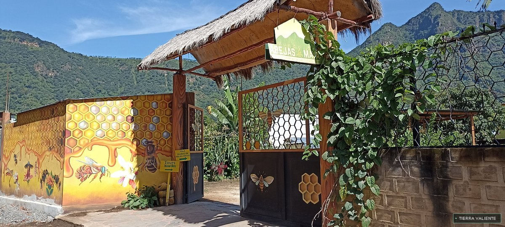

01 · COOPERATIVAAbejas mayas y meliponas
Acércate a las abejas nativas sin aguijón y conoce la miel, los productos artesanales y el trabajo de conservación de la cooperativa.
Descubre esta visita
-
Recorrido por las colmenas
Observa de cerca las abejas europeas y las meliponas nativas sin aguijón, domesticadas por la cultura maya desde la época prehispánica.
-
Degustación de miel
Prueba mieles puras y orgánicas de origen polifloral y de montaña, extraídas directamente de los panales.
-
Productos artesanales y cosmética natural
Conoce los productos que elabora y ofrece la cooperativa: propóleo, polen, jalea real, cera natural, jabones, cremas y vino de miel.
-
Conservación de las abejas
Descubre cómo la siembra de plantas melíferas ayuda a alimentar a las abejas, cuidar los suelos y proteger a los polinizadores locales.
Una herencia viva: para los antiguos mayas, las meliponas, conocidas como Xunah Kaab’, eran sagradas y su miel tenía usos ceremoniales y medicinales. La cooperativa mantiene viva esta herencia tz’utujil y contribuye a proteger especies nativas.